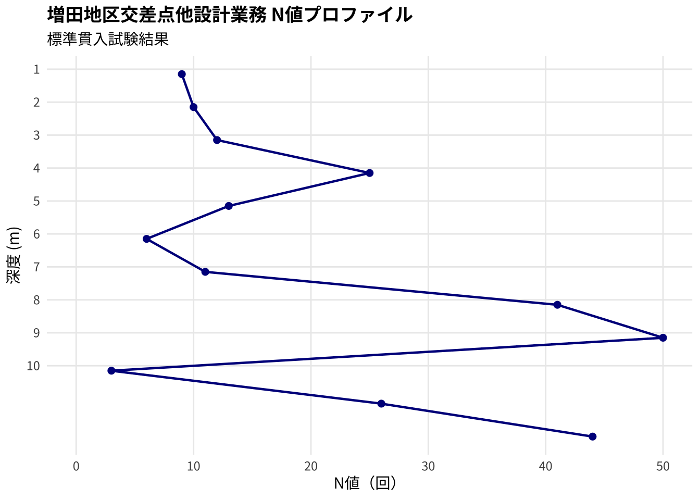
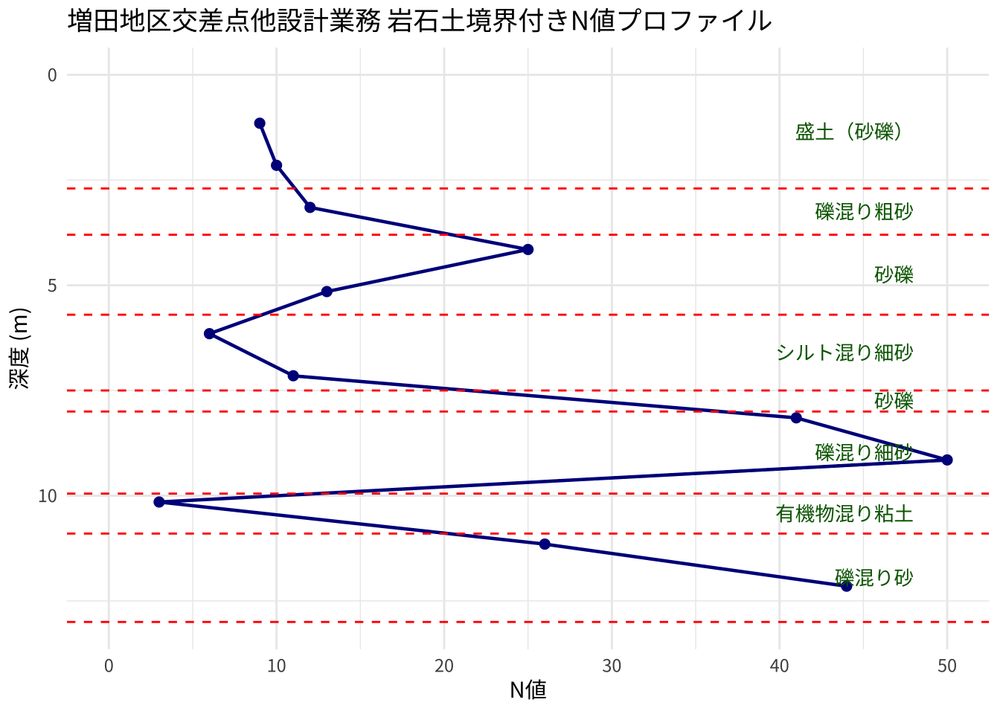
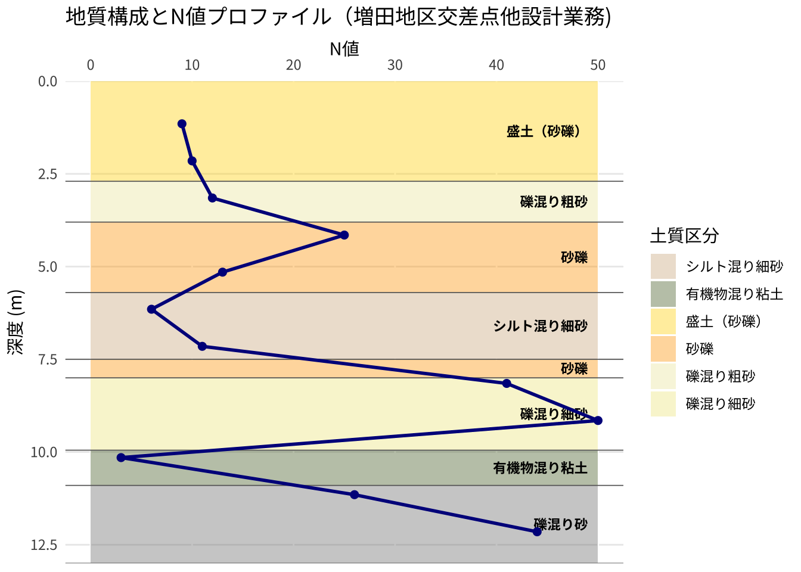
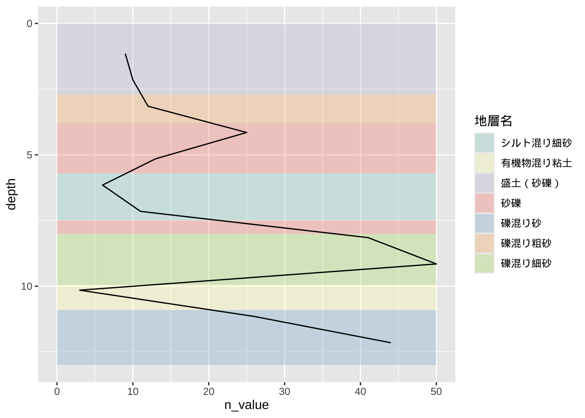

Code
# 初期設定
library(here)
library(xml2)
library(magrittr)
# --- ディレクトリ設定 ---
# ファイルがプロジェクト直下の "data/raw" にある場合の指定
DATA_PATH_raw <- here("data", "raw")国土地盤情報検索サイト KuniJiban 所載のデータを利用してデータの抽出の試行を行う。
国土交通省 東北地方整備局 仙台河川国道事務所 が実施した、「増田地区交差点他設計業務」のデータを利用する。
ボーリング柱状図は以下の通り。
# 初期設定
library(here)
library(xml2)
library(magrittr)
# --- ディレクトリ設定 ---
# ファイルがプロジェクト直下の "data/raw" にある場合の指定
DATA_PATH_raw <- here("data", "raw")はじめにXMLデータを読み込む。
# ファイルの読み込み
# xml2はShift-JISも自動で判別して読み込んでくれます
doc <- read_xml(here(DATA_PATH_raw, "sample_boring_masuda.xml"))
# 1. 調査名を取得する（タグ名：調査名）
project_name <- xml_find_first(doc, ".//調査名") %>% xml_text()
print(paste("調査名:", project_name))[1] "調査名: 増田地区交差点他設計業務"いくつか代表的なデータを抽出してみる。
# 2. すべての岩石名をリストとして取得する（タグ名：岩石土区分_岩石土名）
rocks <- xml_find_all(doc, ".//岩石土区分_岩石土名") %>% xml_text()
# print("出現する岩石:")
# print(rocks)
cat("出現する岩石:", rocks, "\n")出現する岩石: 盛土（砂礫） 礫混り粗砂 砂礫 シルト混り細砂 砂礫 礫混り細砂 有機物混り粘土 礫混り砂 # 3. 標高を取得して数値に変換する（タグ名：孔口標高）
elevation <- xml_find_first(doc, ".//孔口標高") %>% xml_text() %>% as.numeric()
print(paste("孔口標高:", elevation, "m"))[1] "孔口標高: 5.04 m"# --- 応用：地層と下端深度を表形式にする ---
library(dplyr)
strata_table <- data.frame(
depth = xml_find_all(doc, ".//岩石土区分_下端深度") %>% xml_text() %>% as.numeric(),
rocks = xml_find_all(doc, ".//岩石土区分_岩石土名") %>% xml_text()
)
print("地層構成表:")[1] "地層構成表:"print(strata_table) depth rocks
1 2.70 盛土（砂礫）
2 3.80 礫混り粗砂
3 5.70 砂礫
4 7.50 シルト混り細砂
5 8.00 砂礫
6 9.95 礫混り細砂
7 10.90 有機物混り粘土
8 13.00 礫混り砂代表的なデータの抽出が可能であることが分かった。ところでXMLファイルは多くのタグが深い階層を成しているため、どのようなタグが含まれているか確認することが困難である。 よって、XMLファイルに含まれるタグを全て抽出してみる。
# XML内の全ノード名（タグ名）を抽出して重複を除く
all_tags <- doc %>%
xml_find_all(".//*") %>%
xml_name() %>%
unique() %>%
sort()
# 一覧を表示
print(all_tags) [1] "N値記録用具" "N値記録用具_コード"
[3] "N値記録用具_名称" "エンジン"
[5] "エンジン_単位" "エンジン_名称"
[7] "エンジン_能力" "コード1次"
[9] "コード2次" "コード3次"
[11] "コア情報" "テクリスコード"
[13] "ハンマー落下用具" "ハンマー落下用具_コード"
[15] "ハンマー落下用具_名称" "フリー情報"
[17] "ボーリング名" "ボーリング基本情報"
[19] "ボーリング総数" "ボーリング連番"
[21] "ポンプ" "ポンプ_単位"
[23] "ポンプ_名称" "ポンプ_能力"
[25] "事業工事名" "取得方法コード"
[27] "取得方法説明" "地盤勾配"
[29] "基礎情報" "孔内水位"
[31] "孔内水位_孔内水位" "孔内水位_掘削状況"
[33] "孔内水位_掘削状況コード" "孔内水位_水位種別コード"
[35] "孔内水位_水位種別備考" "孔内水位_測定年月日"
[37] "孔口標高" "岩石土区分"
[39] "岩石土区分_下端深度" "岩石土区分_変成岩岩相"
[41] "岩石土区分_変成岩岩石" "岩石土区分_岩相"
[43] "岩石土区分_岩石" "岩石土区分_岩石土コード"
[45] "岩石土区分_岩石土名" "岩石土区分_岩石土記号"
[47] "岩石土区分_岩石群" "岩石土区分_岩石群コード"
[49] "掘削工程" "掘削工程_ケーシング下端深度"
[51] "掘削工程_掘進深度" "掘削工程_測定年月日"
[53] "掘進方向" "掘進角度"
[55] "柱状図様式" "標準貫入試験"
[57] "標準貫入試験_0_10打撃回数" "標準貫入試験_0_10貫入量"
[59] "標準貫入試験_10_20打撃回数" "標準貫入試験_10_20貫入量"
[61] "標準貫入試験_20_30打撃回数" "標準貫入試験_20_30貫入量"
[63] "標準貫入試験_備考" "標準貫入試験_合計打撃回数"
[65] "標準貫入試験_合計貫入量" "標準貫入試験_開始深度"
[67] "標題情報" "櫓種類"
[69] "櫓種類コード" "櫓種類名称"
[71] "測地系" "発注機関"
[73] "発注機関名称" "相対密度_コード"
[75] "相対密度_状態" "相対密度稠度"
[77] "相対密度稠度_下端深度" "相対稠度_コード"
[79] "相対稠度_状態" "経度_分"
[81] "経度_度" "経度_秒"
[83] "経度緯度情報" "総掘進長"
[85] "緯度_分" "緯度_度"
[87] "緯度_秒" "色調"
[89] "色調_下端深度" "色調_色調名"
[91] "観察記事" "観察記事_上端深度"
[93] "観察記事_下端深度" "観察記事_記事"
[95] "観察記事枠線" "観察記事枠線_下端深度"
[97] "試料採取" "試料採取_上端深度"
[99] "試料採取_下端深度" "試料採取_採取方法"
[101] "試料採取_採取方法コード" "試料採取_試料番号"
[103] "試料採取_試験名" "試錐機"
[105] "試錐機_名称" "試錐機_方法"
[107] "試錐機_能力" "読取精度コード"
[109] "調査会社" "調査会社_TEL"
[111] "調査会社_コア鑑定者" "調査会社_ボーリング責任者"
[113] "調査会社_主任技師" "調査会社_名称"
[115] "調査会社_現場代理人" "調査位置"
[117] "調査位置住所" "調査名"
[119] "調査基本情報" "調査対象"
[121] "調査期間" "調査期間_終了年月日"
[123] "調査期間_開始年月日" "調査目的"
[125] "適用規格" 次にタグを階層ごとに表示してみる。
library(xml2)
library(purrr)
# 階層構造を再帰的に表示する関数
display_structure <- function(node, level = 0) {
# 現在のノード名を取得
node_name <- xml_name(node)
# インデントを付けて表示
cat(rep(" ", level), "- ", node_name, "\n", sep = "")
# 子要素があれば、さらに深く潜る（ただし重複表示を避けるため最初の1つ目だけを代表とする）
children <- xml_children(node)
child_names <- unique(xml_name(children))
walk(child_names, function(name) {
# 各タグの最初のサンプルだけを辿って構造を見せる
first_child <- xml_find_first(node, name)
display_structure(first_child, level + 1)
})
}
# 実行（docは読み込み済みのXMLデータ）
display_structure(xml_root(doc))- ボーリング情報
- 基礎情報
- 適用規格
- 標題情報
- 調査基本情報
- 事業工事名
- 調査名
- 調査目的
- 調査対象
- ボーリング名
- ボーリング総数
- ボーリング連番
- 経度緯度情報
- 経度_度
- 経度_分
- 経度_秒
- 緯度_度
- 緯度_分
- 緯度_秒
- 取得方法コード
- 取得方法説明
- 読取精度コード
- 測地系
- 調査位置
- 調査位置住所
- コード1次
- コード2次
- コード3次
- 発注機関
- 発注機関名称
- テクリスコード
- 調査期間
- 調査期間_開始年月日
- 調査期間_終了年月日
- 調査会社
- 調査会社_名称
- 調査会社_TEL
- 調査会社_主任技師
- 調査会社_現場代理人
- 調査会社_コア鑑定者
- 調査会社_ボーリング責任者
- ボーリング基本情報
- 孔口標高
- 総掘進長
- 柱状図様式
- 掘進角度
- 掘進方向
- 地盤勾配
- 試錐機
- 試錐機_名称
- 試錐機_能力
- 試錐機_方法
- エンジン
- エンジン_名称
- エンジン_能力
- エンジン_単位
- ハンマー落下用具
- ハンマー落下用具_コード
- ハンマー落下用具_名称
- N値記録用具
- N値記録用具_コード
- N値記録用具_名称
- ポンプ
- ポンプ_名称
- ポンプ_能力
- ポンプ_単位
- 櫓種類
- 櫓種類コード
- 櫓種類名称
- コア情報
- 岩石土区分
- 岩石土区分_下端深度
- 岩石土区分_岩石土名
- 岩石土区分_岩石土記号
- 岩石土区分_岩石群
- 岩石土区分_岩石群コード
- 岩石土区分_岩石土コード
- 岩石土区分_岩相
- 岩石土区分_岩石
- 岩石土区分_変成岩岩相
- 岩石土区分_変成岩岩石
- 色調
- 色調_下端深度
- 色調_色調名
- 観察記事
- 観察記事_上端深度
- 観察記事_下端深度
- 観察記事_記事
- 観察記事枠線
- 観察記事枠線_下端深度
- 標準貫入試験
- 標準貫入試験_開始深度
- 標準貫入試験_0_10打撃回数
- 標準貫入試験_0_10貫入量
- 標準貫入試験_10_20打撃回数
- 標準貫入試験_10_20貫入量
- 標準貫入試験_20_30打撃回数
- 標準貫入試験_20_30貫入量
- 標準貫入試験_合計打撃回数
- 標準貫入試験_合計貫入量
- 標準貫入試験_備考
- 相対密度稠度
- 相対密度稠度_下端深度
- 相対密度_コード
- 相対密度_状態
- 相対稠度_コード
- 相対稠度_状態
- 試料採取
- 試料採取_上端深度
- 試料採取_下端深度
- 試料採取_試料番号
- 試料採取_採取方法コード
- 試料採取_採取方法
- 試料採取_試験名
- 孔内水位
- 孔内水位_測定年月日
- 孔内水位_掘削状況コード
- 孔内水位_掘削状況
- 孔内水位_孔内水位
- 孔内水位_水位種別コード
- 孔内水位_水位種別備考
- 掘削工程
- 掘削工程_測定年月日
- 掘削工程_掘進深度
- 掘削工程_ケーシング下端深度
- フリー情報まずはシンプルなN値折れ線グラフを描いてみる。
library(tidyverse)
library(xml2)
library(here)
library(showtext)
# 日本語フォントの設定
font_add_google("Noto Sans JP", "noto")
showtext_auto()
# 1. データの読み込み
# here() でプロジェクト内のファイルを指定
#doc <- read_xml(here("data", "processed", "sample_boring_masuda.xml"))
# 2. N値データの抽出
n_profile <- data.frame(
depth = xml_find_all(doc, ".//標準貫入試験_開始深度") %>% xml_text() %>% as.numeric(),
n_value = xml_find_all(doc, ".//標準貫入試験_合計打撃回数") %>% xml_text() %>% as.numeric()
)
# 3. グラフの作成
ggplot(n_profile, aes(x = n_value, y = depth)) +
geom_path(color = "darkblue", linewidth = 0.8) +
geom_point(color = "darkblue", size = 2) +
scale_y_reverse(breaks = seq(0, 10, 1)) +
scale_x_continuous(limits = c(0, 50), breaks = seq(0, 50, 10)) +
labs(
title = paste(project_name, "N値プロファイル"),
subtitle = "標準貫入試験結果",
x = "N値（回）",
y = "深度 (m)"
) +
theme_minimal(base_family = "noto") +
theme(
panel.grid.minor = element_blank(),
plot.title = element_text(face = "bold")
)
岩石土質境界を水平線として追加してみる。
# 1. データの再抽出と中点の計算
boundaries <- xml_find_all(doc, "//*[contains(local-name(), '岩石土区分_下端深度')]") %>% xml_text() %>% as.numeric()
soils <- xml_find_all(doc, "//*[contains(local-name(), '岩石土区分_岩石土名')]") %>% xml_text()
strata_data <- data.frame(
lower = boundaries,
soil_name = soils
) %>%
mutate(
# 一つ前の下端深度を「上端（upper）」とする。最初の層の上端は0。
upper = lag(lower, default = 0),
# 層の中央値を計算
midpoint = (upper + lower) / 2
)
# 2. 作図
ggplot() +
# N値の折れ線
geom_path(data = n_profile, aes(x = n_value, y = depth), color = "darkblue", size = 0.8) +
geom_point(data = n_profile, aes(x = n_value, y = depth), color = "darkblue", size = 2) +
# 地質境界の水平線（赤線）
geom_hline(data = strata_data, aes(yintercept = lower),
color = "red", linetype = "dashed", size = 0.5) +
# 地層名の表示（中点に配置）
geom_text(data = strata_data, aes(x = 48, y = midpoint, label = soil_name),
family = "noto", hjust = 1, color = "darkgreen", size = 3.5) +
scale_y_reverse(limits = c(max(strata_data$lower), 0)) +
scale_x_continuous(limits = c(0, 50)) +
labs(title = paste(project_name, "岩石土境界付きN値プロファイル"),
x = "N値", y = "深度 (m)") +
theme_minimal(base_family = "noto")
背景色を付けてみる。
# 1. 塗り分け用の色設定（土質名に合わせて調整）
# 実際のデータに含まれる土質名に合わせて適宜追加してください
soil_colors <- c(
# --- 礫・砂系（温色系で強固なイメージ） ---
"盛土（砂礫）" = "#FFD700", # ゴールド（人工的な礫質土）
"砂礫" = "#FFA500", # オレンジ（代表的な礫質土）
"礫混り粗砂" = "#EEE8AA", # ペールゴールデンロッド（粗い砂）
"礫混り細砂" = "#F0E68C", # カーキ（やや細かい砂）
"シルト混り細砂" = "#D2B48C", # タン（シルトが混じり少し濁った砂）
# --- 粘土・シルト・有機物系（寒色・暗色系で軟弱なイメージ） ---
"有機物混り粘土" = "#556B2F", # ダークオリーブ（有機物特有の暗緑色）
"礫混り粘土" = "#B0C4DE", # ライトスチールブルー（粘土ベースに礫）
"シルト" = "#C0C0C0", # シルバー（標準的なシルト）
"表土" = "#E6E6E6", # 薄いグレー
"シルト" = "#CCCCCC", # グレー
"砂混り礫" = "#FFFACD", # レモン色
"岩盤" = "#DEB887", # 茶色（ビスク）
"風化岩" = "#F4A460" # 砂礫風の色
)
# 2. 作図
ggplot() +
# 地層の背景塗り分け (geom_rect)
# xmin/xmaxを0〜50にすることで、N値グラフの背景全体を塗る
geom_rect(data = strata_data,
aes(xmin = 0, xmax = 50, ymin = upper, ymax = lower, fill = soil_name),
alpha = 0.4) + # N値の線が見えるよう透明度を調整
# 地質境界の水平線
geom_hline(data = strata_data, aes(yintercept = lower),
color = "gray40", linetype = "solid", linewidth = 0.3) +
# 地層名ラベル（右端に配置）
geom_text(data = strata_data, aes(x = 49, y = midpoint, label = soil_name),
family = "noto", hjust = 1, color = "black", size = 3, fontface = "bold") +
# N値の折れ線（最前面に描画）
geom_path(data = n_profile, aes(x = n_value, y = depth),
color = "darkblue", linewidth = 1) +
geom_point(data = n_profile, aes(x = n_value, y = depth),
color = "darkblue", size = 2) +
# 色の設定
scale_fill_manual(values = soil_colors) +
# 軸と外観の設定
scale_y_reverse(expand = c(0, 0)) + # グラフの上下の余白をなくす
scale_x_continuous(limits = c(0, 50), position = "top") + # N値軸を上側に配置（柱状図の慣習）
labs(title = paste0("地質構成とN値プロファイル（",project_name,")"),
x = "N値", y = "深度 (m)", fill = "土質区分") +
theme_minimal(base_family = "noto") +
theme(
panel.grid.major.x = element_line(color = "white"),
panel.grid.minor = element_blank(),
legend.position = "right"
)
別バージョン
# ggplot2のgeom_rect（四角形）を使って地層を塗り分ける
ggplot() +
geom_rect(data = strata_data,
aes(xmin = 0, xmax = 50, ymin = upper, ymax = lower, fill = soil_name),
alpha = 0.3) + # 透明度を上げてN値を見やすく
scale_fill_brewer(palette = "Set3", name = "地層名") +
# ここに以前のN値プロットを重ねる
geom_path(data = n_profile, aes(x = n_value, y = depth)) +
scale_y_reverse()